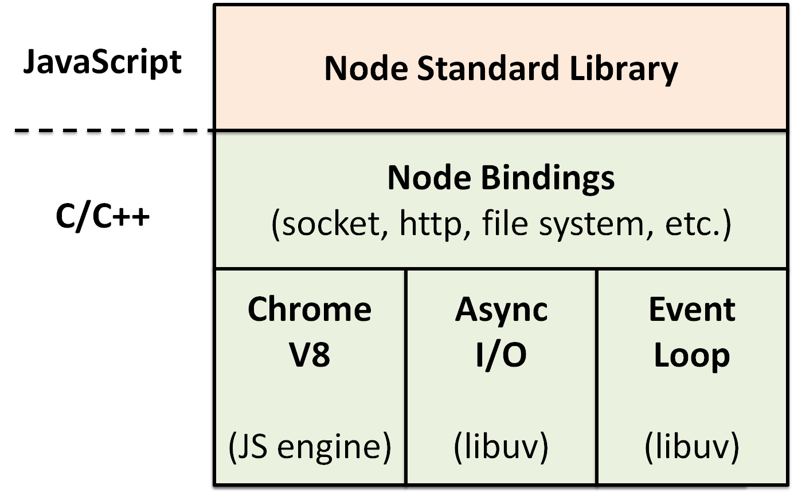

# node 介绍
# 前言
本人平时学习及收集内容，欢迎参入一起讨论。
# 内容
# 一、Node 的起名与起源
# 1.1 为什么是 JavaScript
相比其他语言，JavaScript 比 C 的开发门槛要低。
# 1.2 为什么叫 Node
Node 发展为一个强制不共享任何资源的单线程、单进程系统，包含十分适宜网络的，为构建大型分布式应用程序提供基础设施，其目标也是成为一个构建快速、可伸缩的网络应用平台。
# 二、Node 的特点
# 2.1 异步 I/O
在 Node 中，绝大多数的操作都以异步的方式进行调用。例如诹文件
# 2.2 事件与回调函数
事件的编程方式具有轻量级、松耦合、只关注事务点等优势。
回调函数也是最好的接受异步调用返回数据的方式。介理这种编程方式对于很多习惯同步思路编程的人来说，也许是十分不习惯的。
# 2.3 单线程
Node 保持了 JavaScript 在游览器中单线程的特点。JavaScript 与其余线程是无法共享任何状态的。单线程的最大好处是不用像多线程和编程那样处处在意状态的同步问题，这里没有死锁的存在，也没有线程上下文交换所带来的性能上的开销。
单线程的弱点具体有以下 3 方面：
- 无法利用多核 CPU。
- 错误会引起整个应用退出，应用的健壮性值得考验。
- 大量计算占用 CPU 导致无法继续调用异步 I/O。
Node 采用了与 Web Workers 相同的思路来解决单线程中大计算量的问题：child_process。
子进程的出现，意味着 Node 可以从容地应对单纯种在健壮性和无法利用多核 CPU 方面的问题。通过将计算分发到各个子进程，可以将大量计算分解掉，然后再通过进程之间的事件消息来传递结果，这可以很好地保持应用模型的简单和低依赖。通过 Master-Worker 的管理方式，也可以很好地管理各个工作进程，以达到更高的健壮性。
# 2.4 跨平台
Node 之所以可以跨平台，主要是在操作系统与 Node 上层模块系统之间构建了一层平台层架构，即 libuv。
# 三、Node 的应用场景
Node.js 使用场景主要分为 4 大类
![img]](used.png)
- 跨平台：覆盖你能想到的面向用户的所有平台，传统的 PC Web 端，以及 PC 客户端
nw.js/electron、移动端cordova、HTML5、react-native、weex、硬件ruff.io等。
- 跨平台：覆盖你能想到的面向用户的所有平台，传统的 PC Web 端，以及 PC 客户端
- web 应用开发：网站、Api、RPC 服务等
- 前端：三大框架
React\Vue\Angular辅助开发，以及工程化演进过程（使用Gulp/WebPack构建 Web 开发工具）
- 前端：三大框架
- 工具：
npm上各种工具模块，包括各种前端预编译、构建工具Grunt/Gulp、脚手架，命令行工具，各种奇技淫巧等。
- 工具：
下面列出具体的 Node.js 的使用场景，以模块维度划分
| 分类 | 描述 | 相关模块 |
|---|---|---|
| 网站 | 类似于cnodejs.org这样传统的网站 | Express/Koa |
| Api | 同时提供给移动端，PC，h5等前端使用的HTTP Api接口 | Restify/HApi |
| Api 代理 | 为前端提供的，主要对后端 Api 接口进行再处理，以便更多的适应前端开发 | Express/Koa |
| IM 即时聊天 | 实时应用，很多是基于WebSocket协议的 | Socket.io/sockjs |
| 反向代理 | 提供类似于nginx反向代理功能，但对前端更友好 | anyproxy/node-http-proxy/hiproxy |
| 前端构建工具 | 辅助前端开发，尤其是各种预编译，构建相关的工具，能够极大的提高前端开发效率 | Grunt/Gulp/Bower/Webpack/Fis3/Ykit |
| 命令行工具 | 使用命令行是非常酷的方式，前端开发自定义了很多相关工具，无论是 shell 命令，node 脚本，还是各种脚手架等，几乎每个公司\小组都会自己的命令行工具集 | Cordova/Shell.js |
| 操作系统 | 有实现，但估计不太会有人用 | NodeOS |
| 跨平台打包工具 | 使用 Web 开发技术开发 PC 客户端是目前最流行的方式，会有更多前端开发工具是采用这种方式的 | PC 端的 electron、nw.js，比如钉钉 PC 客户端、微信小程序 IDE、微信客户端，移动的 Cordova，即老的 Phonegap，还有更加有名的一站式开发框架 Ionicframework |
| P2P | 区块链开发、BT 客户端 | webtorrent/ipfs |
| 编辑器 | Atom和VSCode都是基于electron模块的 | electron |
| 物联网与硬件 | ruff.io 和很多硬件都支持 node sdk | ruff |
**总结：**Nodejs 适合 I/O 密集型应用，不适合计算密集型应用。
# 四、Node 基本原理
Node.js 是基于 Chrome V8 引擎构建的，由事件循环（Event Loop）分发 I/O 任务，最终工作线程（Work Thread）将任务丢到线程池（Thread Pool）里去执行，而事件循环只要等待执行结果就可以了。

- Chrome V8 是 Google 发布的开源 JavaScript 引擎，采用 C/C++编写，在 Google 的
Chrome浏览器中被使用。Chrome V8 引擎可以独立运行，也可以用来嵌入到 C/C++应用程序中执行。 - Event Loop 事件循环（由
libuv提供） - Thread Pool 线程池（由
libuv提供）
梳理一下
- Chrome V8 是 JavaScript 引擎
- Node.js 内置 Chrome V8 引擎，所以它使用的 JavaScript 语法
- JavaScript 语言的一大特点就是单线程，也就是说，同一个时间只能做一件事
- 单线程就意味着，所有任务需要排队，前一个任务结束，才会执行后一个任务。如果前一个任务耗时很长，后一个任务就不得不一直等着。
- 如果排队是因为计算量大，CPU 忙不过来，倒也算了，但是很多时候 CPU 是闲着的，因为 I/O 很慢，不得不等着结果出来，再往下执行
- CPU 完全可以不管 I/O 设备，挂起处于等待的任务，先运行排在后面的任务
- 将等待中的 I/O 任务放到 Event Loop 里
- 由 Event Loop 将 I/O 任务放到线程池里
- 只要有资源，就尽力执行
我们再换一个维度看一下

# 参考资料
- 《深入浅出 nodejs》
- 《nodejs 开发指南》
- 【面试】迄今为止把同步/异步/阻塞/非阻塞/BIO/NIO/AIO 讲的这么清楚的好文章（快快珍藏）
- 如何正确的学习 Node.js
- Node.js 是什么？我为什么选择它？
- Node.js 如何利用 Libuv 实现事件循环和异步
- 关于 NodeJS 工作原理的五个误解
# 联系作者
平凡世界，贵在坚持。

← ts 学习 Node 的事件循环机制 →